| 상품 | 군마트 | 쿠팡 | 차이 | |
|---|---|---|---|---|
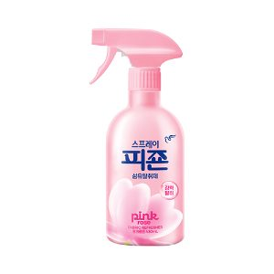 | 스프레이피죤 핑크로즈 430ml | 1,930원 | 4,950원 | -61% |
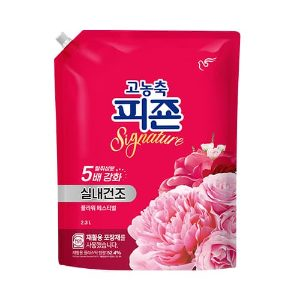 | 고농축피죤 플라워페스티벌 2.3L 2300ml | 4,600원 | 9,200원 | -50% |
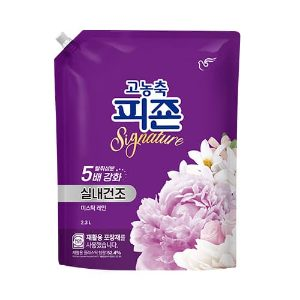 | 고농축피죤 미스틱레인 2.3L 2300ml | 4,600원 | 9,200원 | -50% |
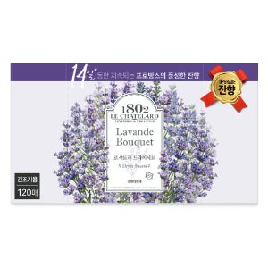 | 애경산업 르샤트라 드라이시트 라벤더부케 1set 120매 | 7,100원 | 13,810원 | -49% |
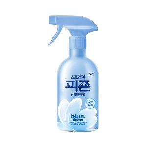 | 스프레이피죤 블루비앙카 430ml | 1,930원 | 3,625원 | -47% |
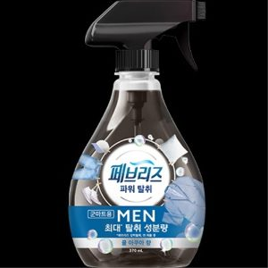 | 페브리즈 섬유탈취제 맨 370ml | 2,770원 | 5,100원 | -46% |
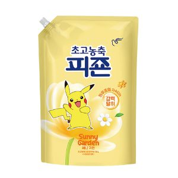 | 고농축피죤 써니가든 1.6L 1600ml | 3,040원 | 5,550원 | -45% |
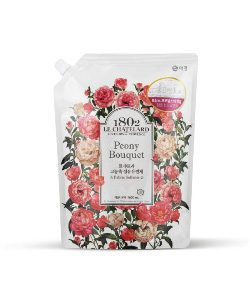 | 애경산업 르샤트라 섬유유연제 피오니부케 1.6L | 2,590원 | 4,225원 | -39% |
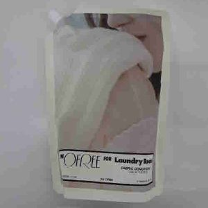 | 메디쿼터스 디오프리 섬유유연제 1 리터 | 3,890원 | 6,135원 | -37% |
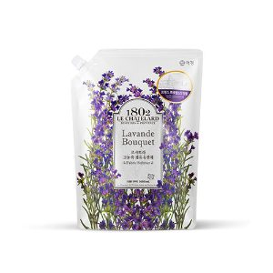 | 애경산업 르샤트라 섬유유연제 라벤더부케 ea 1.6리터 | 2,870원 | 4,493원 | -36% |
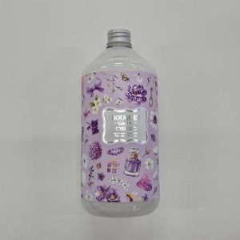 | 부케가르니 딥퍼퓸 섬유유연제 화이트머스크 1000 ㎖ | 3,920원 | 5,633원 | -30% |
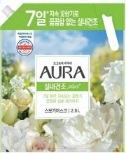 | 엘지생활건강 샤프란 아우라 스모키머스크 2.6L 2600ml | 7,050원 | 9,660원 | -27% |
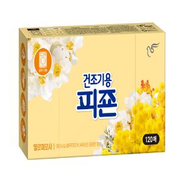 | 건조기용피죤 옐로미모사 120매 | 6,560원 | 8,917원 | -26% |
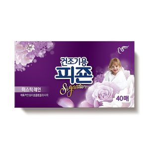 | 건조기용피죤 미스틱레인 40매 | 2,720원 | 3,610원 | -25% |
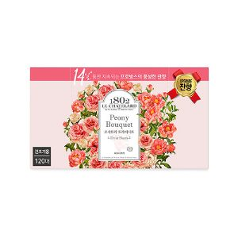 | 애경산업 르샤트라드라이시트피오니부케 120매 | 7,770원 | 10,073원 | -23% |
| 엘지생활건강 샤프란시트코튼블로썸50매 | 4,060원 | 5,193원 | -22% | |
섬유유연제 말고 다른 것도
더 이상 직접 비교하지 마세요.
군마트 상품을 한곳에 모아 PX 가격과 온라인 가격을 쉽게 비교할 수 있습니다.
이게 실제 화면이에요. 상품을 누르면 바로 열립니다.
국방가족 분들이 조금이라도 편하게 군마트를 이용하셨으면 하는 마음으로 만들었습니다.
국방가족을 위한 작은 재능기부입니다.